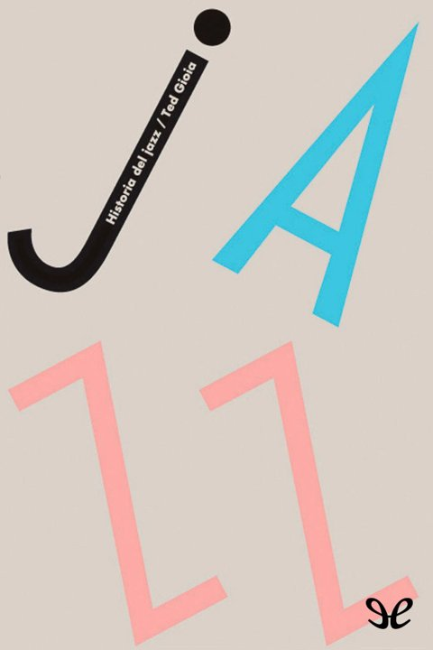
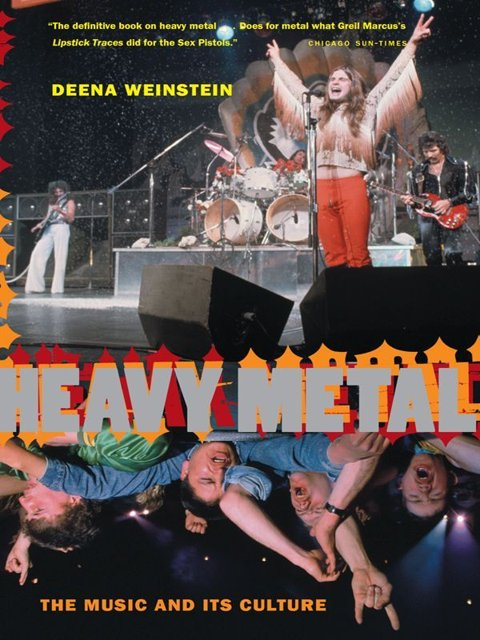
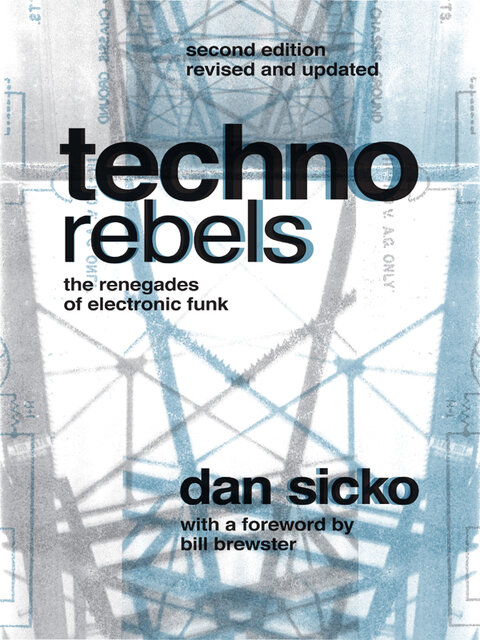
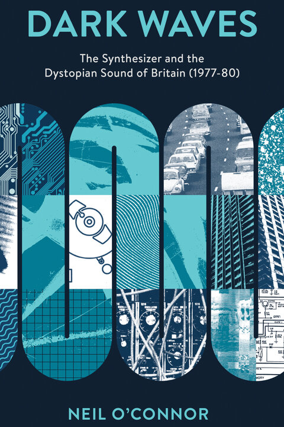

Historia del rock
Piero Scaruffi · 1951-2000
Del rock'n'roll al post-rock: géneros, sus influencias y la discografía comentada sección a sección, con las listas de mejores discos.
- 120géneros
- 4952discos y canciones
- 2470artistas
Loops
Javier Blánquez y Omar León (eds.) · Loops 1 y Loops 2
Una historia de la música electrónica de los siglos XX y XXI: de los pioneros y la música concreta al techno, el house y lo que vino después.
- 264géneros
- 2555discos y canciones
- 1234artistas
Postpunk
Simon Reynolds · 1978-1984
Romper todo y empezar de nuevo: las escenas que salieron del punk, de Joy Division y Factory al synth-pop y el gótico.
- 91escenas
- 936discos y canciones
- 281artistas

Historia del jazz
Ted Gioia · de Congo Square al siglo XXI
Del ragtime y Nueva Orleans al bebop, el free y la fusión, con la discografía recomendada del libro marcada con ★.
- 69estilos y escenas
- 1131grabaciones
- 248artistas

Heavy Metal
Deena Weinstein · The Music and Its Culture
La sociología del metal: su código, los músicos, la subcultura de «parias orgullosos», los medios, el concierto como rito, sus detractores y los noventa, con los cien discos definitivos ★.
- 55géneros y escenas
- 287discos y canciones
- 136artistas
1966
Jon Savage · The Year the Decade Exploded
Un año mes a mes, cada uno a partir de un single: mods, garaje, soul y Motown, LSD, la Velvet y Warhol, Vietnam, derechos civiles, feminismo y derechos gais, con los singles de cada mes de la discografía del libro ★.
- 71escenas y movimientos
- 878discos y canciones
- 453artistas
Funk
Rickey Vincent · The Music, the People, and the Rhythm of the One
Del blues y James Brown a Sly, Parliament-Funkadelic, el disco, Prince, el go-go y el hip hop: el funk como música y actitud del poder negro, con la discografía esencial del libro ★.
- 76escenas y bandas
- 1344discos y canciones
- 317artistas
The Come Up
Jonathan Abrams · An Oral History of the Rise of Hip-Hop
De las fiestas de Kool Herc en el Bronx a Sugar Hill, Def Jam, la edad de oro, N.W.A, el sur, Tupac y Biggie, Eminem y Kanye: la historia oral del hip hop contada por sus protagonistas, con los discos clave ★.
- 78escenas y crews
- 480discos y canciones
- 219artistas

Techno Rebels
Dan Sicko · The Renegades of Electronic Funk
De Kraftwerk y las fiestas de instituto de Detroit a Cybotron, Atkins, May y Saunderson, el rave británico, Underground Resistance, Berlín y el festival de Hart Plaza: el techno contado desde su ciudad, con sus discos clave ★.
- 59escenas y sellos
- 236discos y canciones
- 121artistas
El flamenco contado con sencillez
Carlos Arbelos · palos, etapas y artistas del arte jondo
Del crisol gitano, morisco y sefardí y los primeros cantaores de Triana y Jerez a los cafés cantantes, la ópera flamenca, Mairena, Camarón, Paco de Lucía, Morente y la fusión, con cada palo y la discografía recomendada del libro ★.
- 59palos, etapas y escuelas
- 77discos y canciones
- 324artistas citados
El libro de la salsa
César Miguel Rondón · crónica de la música del Caribe urbano
Del Palladium de Machito, Puente y Tito Rodríguez y la Cuba de Arsenio y Benny Moré a la pachanga, el bugalú, Fania y sus Estrellas, Colón y Lavoe, Palmieri, Celia, Ismael Rivera, Oscar D’León, Siembra de Blades y lo que vino después, con la discografía básica del libro ★.
- 106escenas, orquestas y sellos
- 524discos y canciones
- 447artistas citados

Dark Waves
Neil O’Connor · The Synthesizer and the Dystopian Sound of Britain
La electrónica oscura de la Gran Bretaña en crisis: Cabaret Voltaire, Throbbing Gristle, The Normal, Fad Gadget, The Human League, Gary Numan y Visage, con sus raíces en Dada, Ballard y el Radiophonic Workshop y su legado en Mute, el Blitz y el EBM, y un disco clave de cada uno ★.
- 54escenas, artistas e influencias
- 152discos y canciones
- 220artistas citados